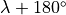
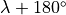

Planetary Coordinate Systems and System Geometry¶
Mercury¶
Mercury’s rotational period and orbital period are in a 2:3 resonance: two
Mercury days are equal to three Mercury years. The consequence of this is that
the sub-solar longitude on Mercury is a double-valued function of true anomaly
angle. If the sub-solar longitude is  at true anomaly
at true anomaly  one year, then it will be  (modulo 360º) the
following year and the year after that. This is illustrated
below:
one year, then it will be  (modulo 360º) the
following year and the year after that. This is illustrated
below:

Also shown is Mercury’s sub-solar latitude, which is always near-zero due to the lack of any significant axial tilt.
Coordinate Systems on a Planet¶
The coordinate system used for the object’s latitude and longitude depends on whether the packets are ejected from a planet or a moon. For planets, a solar-fixed coordinate system is used where the longitude increases in the positive direction from the sub-solar point (noon) point to dusk point:
sub-solar (noon) point = 0 rad = 0°
dusk point (leading) = π/2 rad = 90°
anti-solar (midnight) point = π rad = 180°
dawn point (trailing) = 3π/2 rad = 270°
Latitude ranges from -π/2 rad to π/2 rad for the south pole to the north pole. All angular values are given in radians in the input file.
Coordinate Systems on a Moon¶
For satellites, the coordinate system is planet-fixed from the sub-planet point increasing positive through the leading point:
sub-planet point = 0 rad = 0°
leading point = π/2 rad = 90°
anti-planet point = π rad = 180°
trailing point = 3π/2 rad = 270°
Latitude ranges from -π/2 rad to π/2 rad for the south pole to the north pole. All angular values are given in radians in the input file.